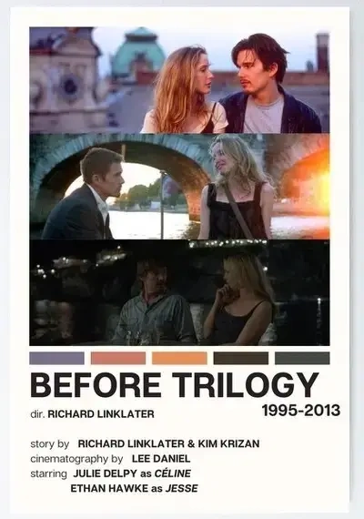
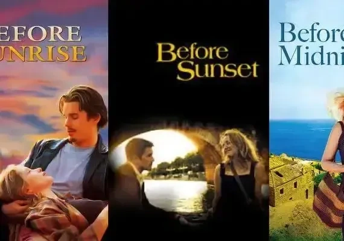
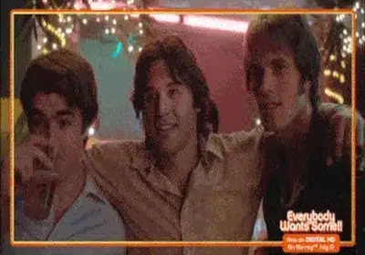

Vol.23 / Extra Edition: Before Trilogy
9年ごとの再会：
『ビフォア・トリロジー』が刻んだ愛の経年変化
2026.04.23 UP

🎬 Introduction
リチャード・リンクレイター監督は1960年テキサス州生まれ。独学で映画を学び、低予算映画『スラッカー』で注目を浴びました。彼の最大の特徴は、「時間の流れを映画の構造そのものにする」という極めて実験的な姿勢です。
■ ビフォア・トリロジー 年表
- 1995年『ビフォア・サンライズ 恋人までの距離』
舞台：ウィーン / 二人の年齢：23歳 - 2004年『ビフォア・サンセット』
舞台：パリ / 二人の年齢：32歳（前作から9年後） - 2013年『ビフォア・ミッドナイト』
舞台：ギリシャ / 二人の年齢：41歳（前作からさらに9年後）

01. ビフォア・サンライズ 恋人までの距離 Filmarks Amazon Prime
発表年: 1995
特徴: ユーレイルパスで旅するアメリカ人青年ジェシーとフランス人学生セリーヌが、ウィーンの街を歩きながら語り明かす。若さゆえの万能感と「翌朝の列車に乗るまで」という極限のタイムリミットが、二人の会話に独特の焦燥感と輝きを与えています。レコード店での視線の交差や、観覧車でのファーストキスなど、言葉以上の感情を雄弁に語る演出が光る、ストップモーションならぬ「歩行と対話の連続性」の美学。

02. ビフォア・サンセット Filmarks Amazon Prime
発表年: 2004
特徴: 舞台はパリ。前作から9年後、作家となったジェシーのサイン会で再会した二人が過ごす時間を、上映時間とほぼ同じ85分間でリアルタイムに描く実験的な構成。脚本段階から主演のイーサン・ホークとジュリー・デルピーが深く関与しており、大人になったがゆえの後悔や諦念が会話の端々に滲み出ます。会話の「間」や「温度差」を極限まで構造化し、映画史に残る完璧なラストシーンへと帰結します。

03. ビフォア・ミッドナイト Filmarks Amazon Prime
発表年: 2013
特徴: ギリシャのペロポネソス半島。前作からさらに9年が経ち、二人は家族として生活を共にしています。甘いロマンスが現実の「生活」へと変わった重みや、積もり積もった不満が、ホテルの一室での長回しの口論として爆発します。三部作の中で最も長回しのテイクが多く、10分を超える車内や室内での会話劇は圧巻。俳優たちの生々しい演技と脚本の「アッセンブリー（組み立て）」が神業の域に達しています。

04. 6才のボクが、大人になるまで。 Filmarks Amazon Prime
発表年: 2014
主人公の年齢: 6歳〜18歳
舞台: テキサス州（ヒューストン、サンマルコス、オースティンなど）
特徴: 監督の執念の極致。CGを使わず、俳優の実際の加齢を12年間記録。この「待つ」という工程は、まさにコマ撮り職人の魂と同質。

05. エブリバディ・ウォンツ・サム!! 世界はボクらの手の中に Filmarks Amazon Prime
発表年: 2016
舞台: テキサス州の大学（1980年）
特徴: 『バッド・チューニング』の精神的続編。大学入学直前の野球部員たちの新学期が始まるまでの3日間を描く。意味のない会話や遊びの中に、青春の煌めきとモラトリアムの終わりを瑞々しく切り取った傑作。

◎ フィルモグラフィー
- No.01 It's Impossible to Learn to Plow by Reading Books (1988)
- No.02 スラッカー (1991)
- No.03 バッド・チューニング (1993)
-
No.04 ビフォア・サンライズ 恋人までの距離 (1995)
★ベルリン国際映画祭 銀熊賞（監督賞）
- No.05 サバービア (1996)
- No.06 ニュートン・ボーイズ (1998)
- No.07 ウェイキング・ライフ (2001)
- No.08 テープ (2001)
- No.09 スクール・オブ・ロック (2003)
- No.10 ビフォア・サンセット (2004)
- No.11 がんばれ!ベアーズ ニュー・シーズン (2005)
- No.12 ファーストフード・ネイション (2006)
- No.13 スキャナー・ダークリー (2006)
- No.14 僕と彼女とオーソン・ウェルズ (2008)
- No.15 バーニー/みんなある種のおかしな人 (2011)
- No.16 ビフォア・ミッドナイト (2013)
-
No.17 6才のボクが、大人になるまで。 (2014)
★ゴールデングローブ賞 作品賞・監督賞 / ベルリン国際映画祭 銀熊賞（監督賞）
- No.18 エブリバディ・ウォンツ・サム!! 世界はボクらの手の中に (2016)
- No.19 30年後の同窓会 (2017)
- No.20 バーナデット ママは行方不明 (2019)
- No.21 アポロ10号 1/2: 宇宙時代のアドベンチャー (2022)
- No.22 ヒットマン (2023)